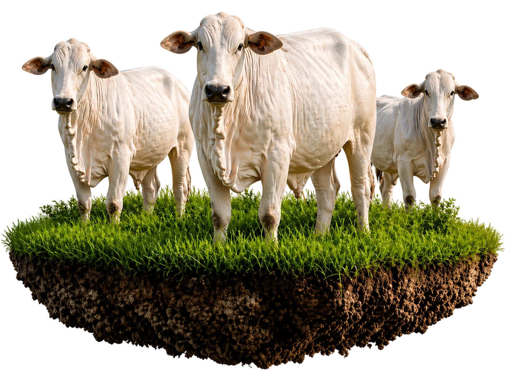

Com experiência construída ao longo de gerações dentro da pecuária, a Arroba Capital nasceu para permitir que qualquer pessoa possa participar de um dos mercados mais tradicionais e sólidos do Brasil: o mercado do gado.
Participe do Próximo Ciclo
Invista no setor que o Brasil é líder mundial
Participe de ciclos pecuários de gado Nelore, com gestão profissional e retorno proporcional ao seu aporte. Você investe. A fazenda cuida.
- A partir de R$ 30.000
- Ciclos de 60 a 90 dias
- Operação 100% acompanhada

Conheça a Fazenda e a Operação
Veja o funcionamento da operação e ouça quem já investiu.
Vídeo em breve
OPERAÇÃO PECUÁRIA CONSTRUÍDA COM EXPERIÊNCIA DE GERAÇÕES
Nossa proposta é simples: conectar investidores a uma operação pecuária real, conduzida por profissionais que vivem o dia a dia da fazenda.
Aqui, o investimento está diretamente ligado à produção, manejo e comercialização de gado dentro de um sistema estruturado de confinamento.
COMO FUNCIONA NA PRÁTICA:
Adquirimos lotes de gado Nelore selecionados, destinados à operação de confinamento.
Os animais recebem uma dieta nutricional específica, com acompanhamento técnico, permitindo a evolução de peso durante um ciclo médio de 60 a 90 dias.
Após o período de engorda, os lotes são destinados ao abate em frigoríficos homologados, seguindo os padrões sanitários.
Transparência da operação
Os investidores acompanham a operação através de:
Notas fiscais de compra e venda dos animais
Relatórios de diagnóstico assinados por responsável técnico veterinário
Registros fotográficos e vídeos da operação
Atualizações ao longo do ciclo
Acompanhamento presencial
Conheça a operação de perto
Além do acompanhamento remoto, o investidor pode visitar a fazenda e conhecer de perto toda a operação, observando na prática o funcionamento da atividade pecuária.
Análise rápida
Ir para o quiz
Entenda se o próximo ciclo faz sentido para o seu perfil
Responda um quiz rápido e receba um direcionamento mais claro antes de avançar.
A PORTA DE ENTRADA PARA O AGRONEGÓCIO
A Arroba Capital nasceu da visão de que grandes oportunidades estão, muitas vezes, fora dos investimentos tradicionais e mais próximas daquilo que sustenta a economia de verdade.
O Brasil: uma potência mundial na produção de carne bovina
O Brasil ocupa hoje uma posição de destaque no agronegócio mundial, sendo o maior produtor e o maior exportador de carne bovina do planeta.
Esse protagonismo é resultado da combinação entre território, clima, tecnologia e tradição pecuária construída ao longo de gerações.
Com mais de 220 milhões de cabeças de gado, o país possui um dos maiores rebanhos bovinos do mundo
número superior à própria população brasileira.
Mais de 220 milhões de cabeças de gado no Brasil
Maior exportador de carne bovina do mundo
Exportações para mais de 170 países
3,5 milhões de toneladas exportadas em 2025
US$ 18 bilhões em receita de exportação em 2025
Mais de 40 milhões de cabeças abatidas por ano
Produção anual acima de 11 milhões de toneladas de carne
O que dizem os investidores
Depoimento em breve.
Depoimento em breve.
Depoimento em breve.
Cenário internacional
A demanda global por carne continua crescendo
A população mundial continua aumentando, e com ela cresce também a necessidade de produção de alimentos.
Segundo projeções internacionais da OCDE e FAO, o consumo global de carnes deve crescer quase 48 milhões de toneladas nas próximas décadas, impulsionado pelo aumento da renda e da demanda por proteína animal em países emergentes.
Estudos do setor indicam que as exportações brasileiras podem atingir mais de 4,3 milhões de toneladas até 2030.
O país já é o maior exportador de carne bovina do mundo e deve continuar ampliando sua presença internacional nos próximos anos.
O avanço da demanda encontra no Brasil um fornecedor estrutural
Nesse cenário, o Brasil ocupa uma posição estratégica. O país já é o maior exportador de carne bovina do mundo e deve continuar ampliando sua presença internacional nos próximos anos.
Estudos do setor indicam que as exportações brasileiras podem atingir mais de 4,3 milhões de toneladas até 2030, consolidando o país como um dos principais fornecedores globais de proteína animal.
Esse crescimento ocorre porque poucos países possuem as condições naturais que o Brasil tem para produzir carne bovina em grande escala:
Por isso, a pecuária brasileira segue sendo um dos pilares mais sólidos do agronegócio e da produção de alimentos no mundo.
A proposta da Arroba Capital
Participe do próximo ciclo
É dentro desse mercado global que nasce a proposta da Arroba Capital:
permitir que investidores participem de ciclos reais da produção pecuária brasileira.
Perguntas Frequentes
Nossas operações são estruturadas para cotas a partir de R$ 30.000,00, permitindo boa diversificação e entrada para novos investidores.
Trabalhamos predominantemente com ciclos curtos de engorda intensiva, variando entre 60 a 90 dias, o que garante maior liquidez ao investidor.
Todas as atualizações são enviadas através de um canal exclusivo no WhatsApp e por e-mail, mantendo você informado em tempo real.
Todo investimento envolve riscos. No agro, existem riscos biológicos e de mercado. A Arroba Capital mitiga esses riscos através de seguro pecuário (quando aplicável), trava de preços na bolsa (hedge) e manejo sanitário de excelência.
Você responde um quiz rápido para entendermos seu momento, sua faixa de aporte e seus objetivos. Com esse diagnóstico, nossa equipe faz um contato mais aderente ao seu perfil antes de qualquer decisão.